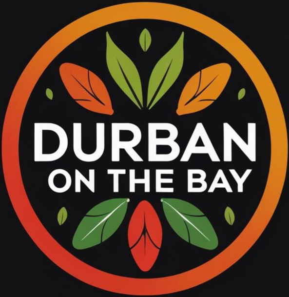

What our guests say ★
Real reviews from real people. We’re proud to serve Durban’s finest curry – and it shows.
⭐ Loved your meal? Leave us a review on Google Maps – it helps our small kitchen shine.

Real reviews from real people. We’re proud to serve Durban’s finest curry – and it shows.
⭐ Loved your meal? Leave us a review on Google Maps – it helps our small kitchen shine.